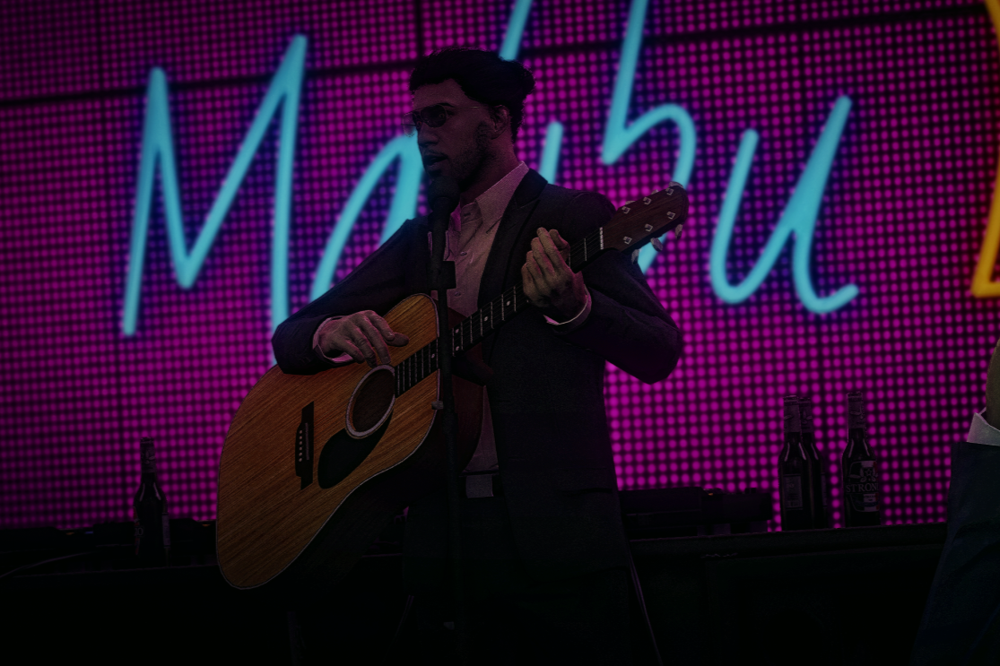
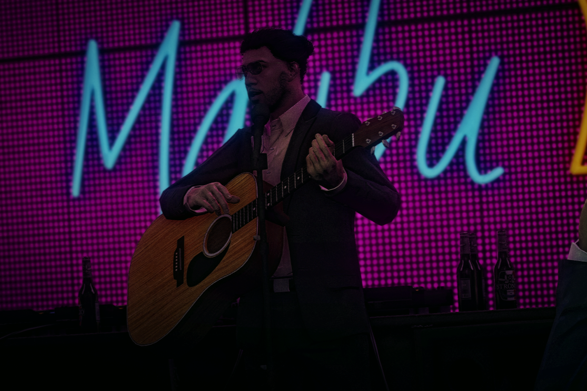
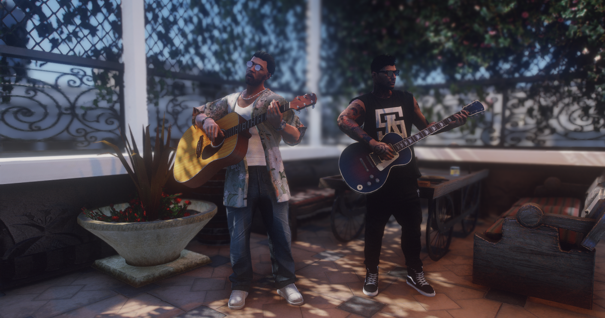
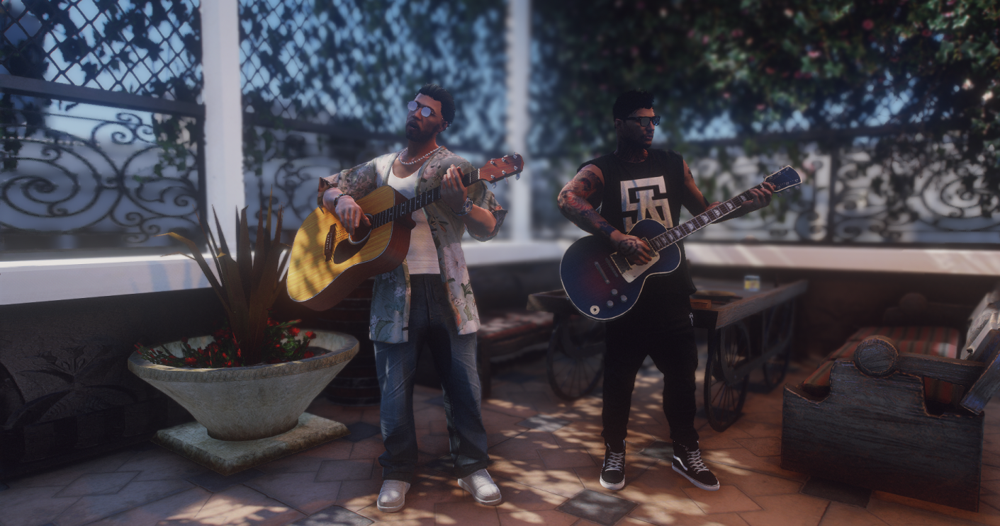
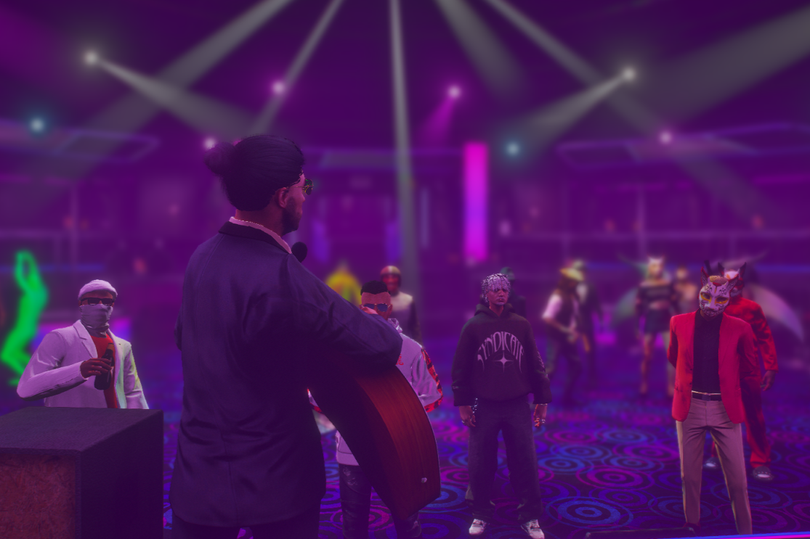
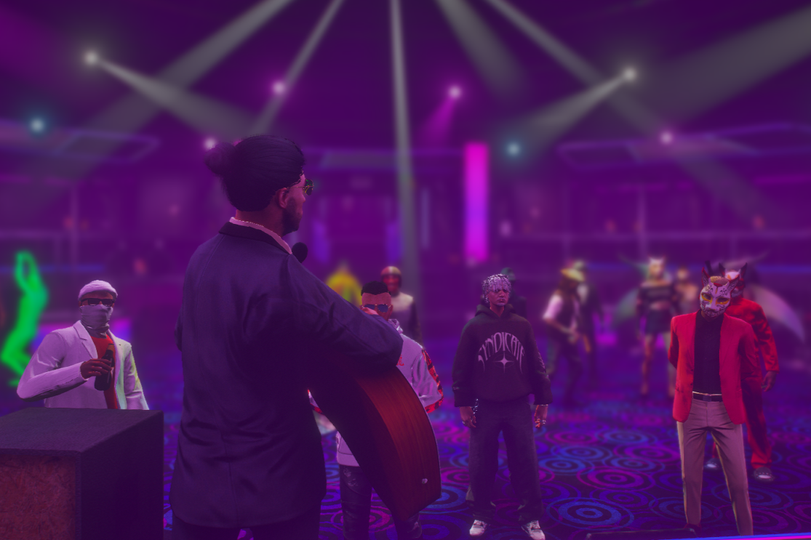

O Canto da Chaleira
Promovendo a criatividade. Enriquecendo a comunidade.
Promovendo a criatividade. Enriquecendo a comunidade.
Cristóvão McDuffin é um cantor português residente em Puerto Esperanza. O seu percurso artístico iniciou-se aos 21 anos, quando se mudou para a cidade para prosseguir os seus estudos, momento em que começou a dedicar-se à música de forma mais consistente.
Ao longo do seu trajeto, Cristóvão atuou em diversos espaços culturais e de entretenimento da cidade, entre os quais o restaurante Hog's, o bar noturno Malibu, o restaurante BurgerShot e a empresa de gravação Rockford Records, onde chegou a ser proprietário e onde também se apresentou em palco. Para além disso, participou num programa de talentos, no qual alcançou a final e apresentou a sua primeira música original, “Pergaminho” e esteve presente como cantor num reality show.
O seu estilo musical caracteriza-se pela versatilidade, com particular incidência na Música Portuguesa, pop e rock. Habitualmente apresenta-se acompanhado da sua guitarra acústica, elemento central na sua expressão artística.
Cristóvão McDuffin tem ainda desenvolvido colaborações com outros músicos, destacando-se a canção “Estica-me as Peles”, gravada em parceria com o artista John Blake. Apesar de ainda não ter recebido distinções formais, tem vindo a afirmar-se no panorama artístico local, consolidando gradualmente a sua presença na cena musical de Puerto Esperanza.
 

 

 
